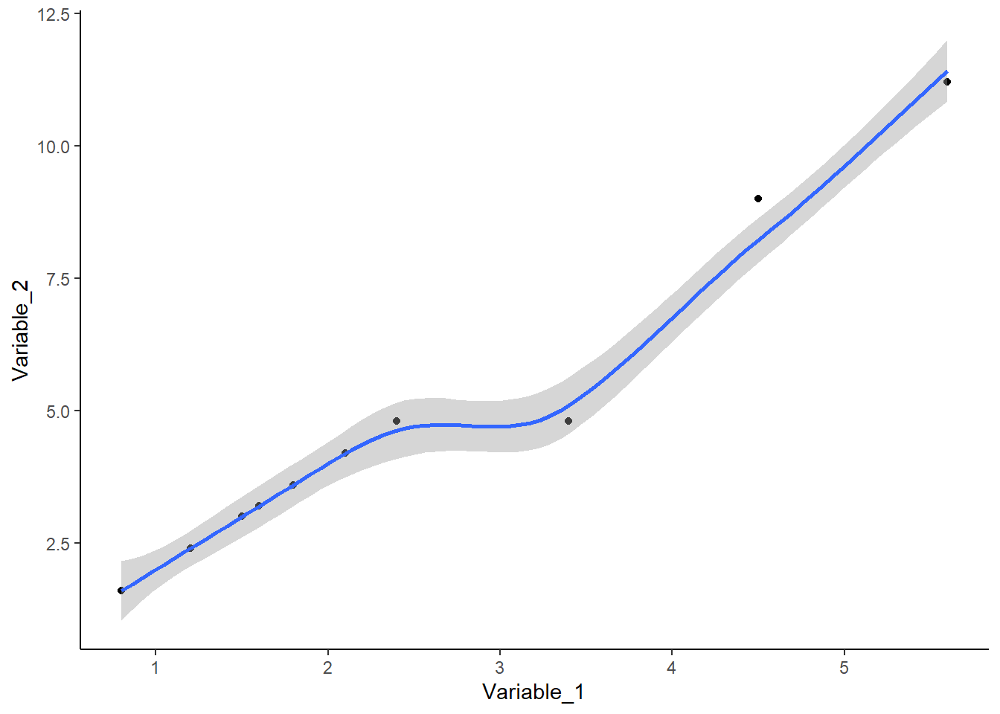
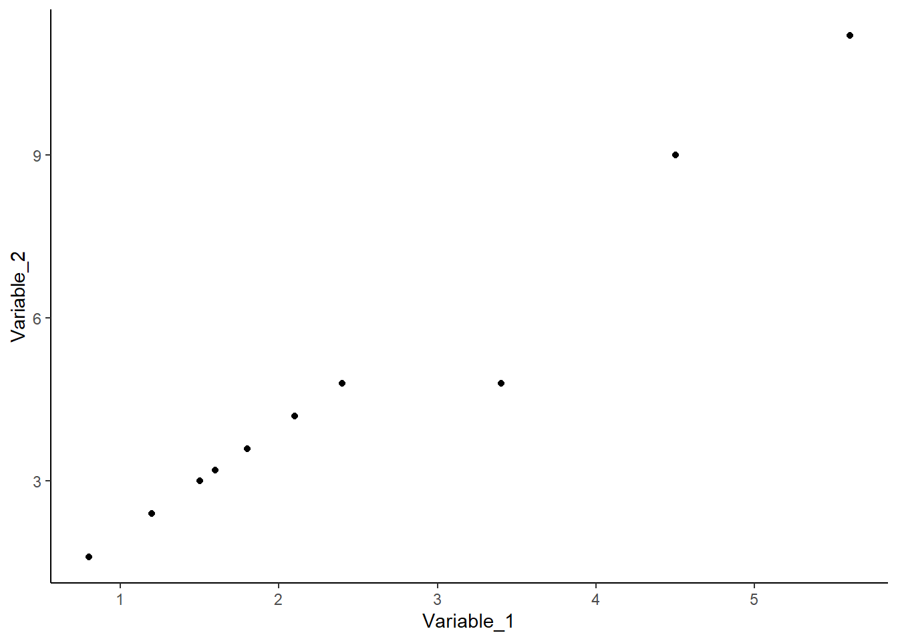

# Librerías requeridas
# install.packages("xlsx")Taller2.1 Intro_RStudio
Resumen de las actividades

El presente taller tiene como objetivo, realizar un entrenamiento básico, sobre los aspectos más relevantes en el manejo del programa RStudio, el cual se encuentra alojado en el siguiente 📈enlace.

Se utilizará como referente al capitulo 2 del libro Análisis de datos ecológicos y ambientales (Rodríguez-Barrios, J. 2023), alojado en el siguiente enlace 📖Enlace_Libro

Actividad 1. Operaciones básicas en RStudio

Archivos requeridos. Descargar las plantillas o complementos para los diferentes talleres en Quarto de RStudio. Todos deben ubicarse en un directorio o carpeta titulado “Taller 2.1 Introducción al RStudio”
Plantillas de talleres en quarto: Estructura de RStudio para realizar los talleres de la asignatura.
Formato base del YML: Estructura del encabezado de los talleres en RStudio. *Hacer clic derecho en el enlace y descargar este archivo.
Formato para justificar el texto: Complemento para justificar los documentos. *Hacer clic derecho en el enlace y descargar este archivo.
Diapositivas en vivo. Son diapositivas de apoyo que solo pueden ser usadas durante el horario de clase, ya que es el docente quien puede irlas presentando. Permiten agilizar el procedimiento de cargar los comandos en RStudio.
Documentos de soporte. Revisar los siguientes enlaces complementarios:
Actividad 2. Importación y Exportación de datos

[
Continuar en el el archivo “Taller1.Rmd” y en las diapositivas Taller1.IntroRStudio.
Realizar los siguientes procedimientos
- Revisar os siguientes enlaces
Actividad 3. Lenguaje Tidyyverse

Continuar en el el archivo “Taller1.Rmd” y en las diapositivas Taller1.IntroRStudio.
Revisar los siguientes enlaces
Resultado del taller
Cargar la Bases de datos (data.frames)
library(tidyverse)
library(xtable) # Importar y exportar
library(openxlsx) # exportar "*.xlsx"
library(readxl) # Importar y exportar
# library(xlsx) # Importar y exportar "*.xlsx" Ejercicio
Realizar varios ajustes a bases de datos elaboradas manualmente en tidyverse
# Base de datos (datos)
datos = data.frame (Meses = c("Enero", "Junio", "Octubre"),
periodos = c("Sequía","Lluvias1","Lluvias2"),
Taxón1 = c(1:3),
Taxón2 = c(20, 25,30),
Taxón3 = c(4,4,4))
datos Meses periodos Taxón1 Taxón2 Taxón3
1 Enero Sequía 1 20 4
2 Junio Lluvias1 2 25 4
3 Octubre Lluvias2 3 30 4str(datos) # Estructura de la base de datos'data.frame': 3 obs. of 5 variables:
$ Meses : chr "Enero" "Junio" "Octubre"
$ periodos: chr "Sequía" "Lluvias1" "Lluvias2"
$ Taxón1 : int 1 2 3
$ Taxón2 : num 20 25 30
$ Taxón3 : num 4 4 4Datos en formato alargado (gather)
datos.l = datos %>% gather(Columnas, Valores)
datos.l Columnas Valores
1 Meses Enero
2 Meses Junio
3 Meses Octubre
4 periodos Sequía
5 periodos Lluvias1
6 periodos Lluvias2
7 Taxón1 1
8 Taxón1 2
9 Taxón1 3
10 Taxón2 20
11 Taxón2 25
12 Taxón2 30
13 Taxón3 4
14 Taxón3 4
15 Taxón3 4Insertar los valores de **periodos** de la base de datos
datos.l = datos %>%
gather(Columnas, Valores, -periodos)
datos.l periodos Columnas Valores
1 Sequía Meses Enero
2 Lluvias1 Meses Junio
3 Lluvias2 Meses Octubre
4 Sequía Taxón1 1
5 Lluvias1 Taxón1 2
6 Lluvias2 Taxón1 3
7 Sequía Taxón2 20
8 Lluvias1 Taxón2 25
9 Lluvias2 Taxón2 30
10 Sequía Taxón3 4
11 Lluvias1 Taxón3 4
12 Lluvias2 Taxón3 4Datos en formato horizontal (spread)
datos.h = datos.l %>%
spread(Columnas, Valores)
datos.h periodos Meses Taxón1 Taxón2 Taxón3
1 Lluvias1 Junio 2 25 4
2 Lluvias2 Octubre 3 30 4
3 Sequía Enero 1 20 4datos Meses periodos Taxón1 Taxón2 Taxón3
1 Enero Sequía 1 20 4
2 Junio Lluvias1 2 25 4
3 Octubre Lluvias2 3 30 4View(datos.h)
View(datos.l)Guardar las bases de datos
write.csv2(datos.h, "datos.h.csv")Base de datos de un censo hipotético
# install.packages("kableExtra")
# library(kableExtra)A continuación se genera la base de datos de un censo hipotético de estudiantes universitarios.
datos = data.frame (n = 1:16, # Consecutivo (16 filas)
Estudiante = c("a","a","a","a","b","b","b","b",
"c","c","c","c","d","d","d","d"),
Sexo = c("f","f","f","f","f","f","f","f",
"m","m","m","m","m","m","m","m"),
Variable_1 = c(1.2, 3.4, 4.5, 5.6, 1.2, 3.4, 4.5, 5.6,
0.8, 2.4, 1.8, 1.5, 1.6, 2.1, 1.2, 0.8),
Variable_2 = c(2.4, 4.8, 9, 11.2, 2.4, 4.8, 9, 11.2,
1.6, 4.8, 3.6, 3, 3.2, 4.2, 2.4, 1.6))
datos n Estudiante Sexo Variable_1 Variable_2
1 1 a f 1.2 2.4
2 2 a f 3.4 4.8
3 3 a f 4.5 9.0
4 4 a f 5.6 11.2
5 5 b f 1.2 2.4
6 6 b f 3.4 4.8
7 7 b f 4.5 9.0
8 8 b f 5.6 11.2
9 9 c m 0.8 1.6
10 10 c m 2.4 4.8
11 11 c m 1.8 3.6
12 12 c m 1.5 3.0
13 13 d m 1.6 3.2
14 14 d m 2.1 4.2
15 15 d m 1.2 2.4
16 16 d m 0.8 1.6Filtrar por sexos
datos.f = datos[datos$Sexo == "f",]
datos.f n Estudiante Sexo Variable_1 Variable_2
1 1 a f 1.2 2.4
2 2 a f 3.4 4.8
3 3 a f 4.5 9.0
4 4 a f 5.6 11.2
5 5 b f 1.2 2.4
6 6 b f 3.4 4.8
7 7 b f 4.5 9.0
8 8 b f 5.6 11.2Vector de medias de las dos variables para las muejeres
promedios.f = colMeans(datos.f[,4:5])
promedios.fVariable_1 Variable_2
3.675 6.850 Vector de medias de las dos variables para los hombres
datos.h = datos[datos$Sexo == "m",]
promedios.h = colMeans(datos.h[,4:5])
promedios.hVariable_1 Variable_2
1.525 3.050 promedios = data.frame(promedios.f, promedios.h)
promedios promedios.f promedios.h
Variable_1 3.675 1.525
Variable_2 6.850 3.050Ejercicio: Filtrar a los estudiantes b, de la base de datos de muejeres (datos.f)
datos.f n Estudiante Sexo Variable_1 Variable_2
1 1 a f 1.2 2.4
2 2 a f 3.4 4.8
3 3 a f 4.5 9.0
4 4 a f 5.6 11.2
5 5 b f 1.2 2.4
6 6 b f 3.4 4.8
7 7 b f 4.5 9.0
8 8 b f 5.6 11.2Guardar la base de datos
write.csv2(datos,"datos2.csv")Filtrar en orden descendente (arrange y desc)
datos.des = datos %>%
arrange(desc(Variable_1))
datos.des n Estudiante Sexo Variable_1 Variable_2
1 4 a f 5.6 11.2
2 8 b f 5.6 11.2
3 3 a f 4.5 9.0
4 7 b f 4.5 9.0
5 2 a f 3.4 4.8
6 6 b f 3.4 4.8
7 10 c m 2.4 4.8
8 14 d m 2.1 4.2
9 11 c m 1.8 3.6
10 13 d m 1.6 3.2
11 12 c m 1.5 3.0
12 1 a f 1.2 2.4
13 5 b f 1.2 2.4
14 15 d m 1.2 2.4
15 9 c m 0.8 1.6
16 16 d m 0.8 1.6Filtrado en orden ascendente
datos.asc = datos %>%
arrange(Variable_1)
datos.asc n Estudiante Sexo Variable_1 Variable_2
1 9 c m 0.8 1.6
2 16 d m 0.8 1.6
3 1 a f 1.2 2.4
4 5 b f 1.2 2.4
5 15 d m 1.2 2.4
6 12 c m 1.5 3.0
7 13 d m 1.6 3.2
8 11 c m 1.8 3.6
9 14 d m 2.1 4.2
10 10 c m 2.4 4.8
11 2 a f 3.4 4.8
12 6 b f 3.4 4.8
13 3 a f 4.5 9.0
14 7 b f 4.5 9.0
15 4 a f 5.6 11.2
16 8 b f 5.6 11.2Filtrar orden ascendente para las mujeres
datos.asc = datos %>%
filter(Sexo == "f") %>%
arrange(Variable_1)
datos.asc n Estudiante Sexo Variable_1 Variable_2
1 1 a f 1.2 2.4
2 5 b f 1.2 2.4
3 2 a f 3.4 4.8
4 6 b f 3.4 4.8
5 3 a f 4.5 9.0
6 7 b f 4.5 9.0
7 4 a f 5.6 11.2
8 8 b f 5.6 11.2Insertar una variable derivada (mutate)
datos.3 = datos %>%
mutate(Variable_3 = Variable_1 + Variable_2)
datos.3 n Estudiante Sexo Variable_1 Variable_2 Variable_3
1 1 a f 1.2 2.4 3.6
2 2 a f 3.4 4.8 8.2
3 3 a f 4.5 9.0 13.5
4 4 a f 5.6 11.2 16.8
5 5 b f 1.2 2.4 3.6
6 6 b f 3.4 4.8 8.2
7 7 b f 4.5 9.0 13.5
8 8 b f 5.6 11.2 16.8
9 9 c m 0.8 1.6 2.4
10 10 c m 2.4 4.8 7.2
11 11 c m 1.8 3.6 5.4
12 12 c m 1.5 3.0 4.5
13 13 d m 1.6 3.2 4.8
14 14 d m 2.1 4.2 6.3
15 15 d m 1.2 2.4 3.6
16 16 d m 0.8 1.6 2.4Combinar (filter, mutate, arrange)
datos.3 = datos %>%
filter(Sexo == "f") %>%
mutate(Variable_3 = Variable_2 * 12) %>%
arrange(desc(Variable_3))
datos.3 n Estudiante Sexo Variable_1 Variable_2 Variable_3
1 4 a f 5.6 11.2 134.4
2 8 b f 5.6 11.2 134.4
3 3 a f 4.5 9.0 108.0
4 7 b f 4.5 9.0 108.0
5 2 a f 3.4 4.8 57.6
6 6 b f 3.4 4.8 57.6
7 1 a f 1.2 2.4 28.8
8 5 b f 1.2 2.4 28.8Calculo de estadísticos
datos.r = datos %>%
group_by(Estudiante, Sexo) %>% # Factores con los que cuenta la base
summarise(prom.2 = mean(Variable_2), # Promedio de la variable 2
de.2 = sd(Variable_2), # Desviación estándar V.2
var.2 = var(Variable_2), # Varianza de la variable 2
n.2 = n(), # Tamaño de la muestra
ee.2 = sd(Variable_2)/sqrt(n()), # Error estándar
max.2 = max(Variable_2, na.rm=T), # Valor máximo
min.2 = min(Variable_2, na.rm=T)) # Valor mínimo
datos.r# A tibble: 4 × 9
# Groups: Estudiante [4]
Estudiante Sexo prom.2 de.2 var.2 n.2 ee.2 max.2 min.2
<chr> <chr> <dbl> <dbl> <dbl> <int> <dbl> <dbl> <dbl>
1 a f 6.85 3.98 15.8 4 1.99 11.2 2.4
2 b f 6.85 3.98 15.8 4 1.99 11.2 2.4
3 c m 3.25 1.33 1.77 4 0.665 4.8 1.6
4 d m 2.85 1.11 1.24 4 0.556 4.2 1.6Importar bases de datos (read)
datos = read.csv2("datos2.csv",row.names = 1)
datos n Estudiante Sexo Variable_1 Variable_2
1 1 a f 1.2 2.4
2 2 a f 3.4 4.8
3 3 a f 4.5 9.0
4 4 a f 5.6 11.2
5 5 b f 1.2 2.4
6 6 b f 3.4 4.8
7 7 b f 4.5 9.0
8 8 b f 5.6 11.2
9 9 c m 0.8 1.6
10 10 c m 2.4 4.8
11 11 c m 1.8 3.6
12 12 c m 1.5 3.0
13 13 d m 1.6 3.2
14 14 d m 2.1 4.2
15 15 d m 1.2 2.4
16 16 d m 0.8 1.6Graficas en ggplot2
ggplot(datos, aes(x= Variable_1, y=Variable_2)) +
geom_point() +
theme_classic()
ggplot(datos, aes(x= Variable_1, y=Variable_2)) +
geom_point() +
geom_smooth() +
theme_classic()
Cargar base de datos gratuita de R (iris)
data(iris)
View(iris)
ggplot(iris, aes(x= Sepal.Length, y=Petal.Length)) +
geom_point() +
geom_smooth() +
theme_classic()
ggplot(iris, aes(x= Sepal.Length, y=Petal.Length, colors= Species)) +
geom_point() +
geom_smooth() +
theme_bw() +
facet_wrap(~Species)